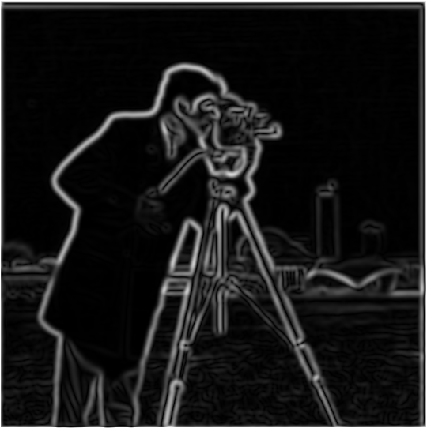

■ DECLASSIFIED - OPERATION ALPHA-TWO ■
Operation Alpha-Two: Fun with Filters and Frequencies
← Go Back
> MISSION STATUS: COMPLETE
> AGENT: Kidd Pham
> OPERATION DATE: [REDACTED]
> CLASSIFICATION LEVEL: RESTRICTED ACCESS
> AGENT: Kidd Pham
> OPERATION DATE: [REDACTED]
> CLASSIFICATION LEVEL: RESTRICTED ACCESS
Mission Objective
Advanced computational photography operations involving 2D convolutions, edge detection, frequency domain analysis,
hybrid image synthesis, and multi-resolution blending techniques. Mission includes implementation of core filtering
algorithms from scratch and application to sophisticated image manipulation protocols.
Part 1: Fun with Filters
Part 1.3: Derivative of Gaussian (DoG) Filter
To reduce noise sensitivity inherent in finite difference operators, Gaussian smoothing was applied prior
to edge detection. Derivative of Gaussian (DoG) filters were constructed by convolving the Gaussian kernel
with
Dx and Dy, allowing gradient estimation in a single step.
Gaussian Kernel (Large)
DoG X Kernel
DoG Y Kernel
Gradient Magnitude (DoG)

Binary Edges (DoG, Threshold 1.0)

Binary Edges (DoG, Threshold 0.3 – Single)
Binary Edges (DoG, Threshold 0.3 – Final)

Compared to raw finite difference outputs, DoG filtering produces significantly cleaner edges by suppressing
high-frequency noise before differentiation. While some fine details are smoothed out, the main structural edges
remain sharp and continuous. The prompt asked us to try two different approaches: (1) first blur the image with a
Gaussian and then apply finite difference operators, and (2) directly convolve with derivative-of-Gaussian (DoG)
filters. The "single" and "final" 0.3-threshold binary edge maps come from these two methods, yet they converge
to nearly identical results. This shows that DoG-based edge detection is stable across both formulations when
reasonable thresholds are chosen.